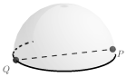
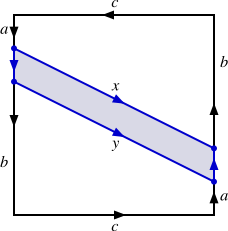
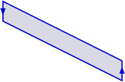

Let \(X\) be a topological space, \(Y\) a set, and \(p: X \to Y\) a surjection. Define the relation \(\sim_p\) on \(X\) by \(x \sim_p y\) if and only if \(p(x)=p(y)\text{.}\) Prove that \(\sim_p\) is an equivalence relation.
2.
Let \(X\) be the real numbers with the standard topology and let \(p: X \to \{a,b,c\}\) be defined by
\begin{equation*}
p(x) = \begin{cases}a \amp \text{ if } x \lt 0 \\ b \amp \text{ if } x = 0 \\ c \amp \text{ if } x \gt 0. \end{cases}
\end{equation*}
What is the quotient topology?
3.
Define an equivalence relation \(\sim\) on \(\R^2\) by \((x_1,y_1) \sim (x_2,y_2)\) whenever \(x_2 - x_1 \in \Z\) and \(y_2 - y_1 \in \Z\text{.}\)
(a)
Prove that \(\sim\) is an equivalence relation on \(\R^2\text{.}\)
(b)
The quotient space is a familiar space. Find that space and explain why it is the quotient space.
4.
Find an example of a continuous surjection that is not a quotient map.
5.
Let \(X\) be a topological space and let \(A\) be a subspace of \(X\text{.}\) Define a relation \(\sim\) on \(X\) whose equivalence classes are \(A\) and \(\{x\}\) if \(x \notin A\text{.}\) In this case the quotient space is denoted as \(X/A\) (think of this space as obtained by crushing \(A\) to a point and leaving everything else alone). Describe each of the following quotient spaces.
(a)
\(X\) is the closed interval \([0,1]\) in \(\R\) and \(A = \{0,1\}\)
Let \(p: X \to Y\) be defined by \(p(1)=a\text{,}\)\(p(2) = a\text{,}\)\(p(3)=b\text{,}\) and \(p(4) = c\text{.}\) Find the quotient topology \(\tau_p\) on \(Y\) defined by the function \(p\text{.}\)
(b)
Let \(q : X \to Y\) be defined by \(q(1)=c\text{,}\)\(q(2) = c\text{,}\)\(q(3) = b\text{,}\) and \(q(4) = a\text{.}\) Find the quotient topology \(\tau_q\) on \(Y\) defined by the function \(q\text{.}\)
(c)
Are the spaces \((Y, \tau_p)\) and \((Y, \tau_q)\) homeomorphic? If yes, write down a specific homeomorphism and explain why your mapping is a homeomorphism. If not, explain why not.
7.
Let \(D^2 = \{(x,y) \in \R^2 \mid x^2+y^2 \leq 1\}\) be the unit disk in \(\R^2\) with the standard topology, and let \(S^1 = \{(x,y) \mid x^2+y^2 = 1\}\) be the boundary of \(D^2\text{.}\) Describe the quotient spaces \(D^2/\ssim\) for each equivalence relation (assume that points are similar to themselves). Let \(x = (s_1,t_1)\) and \(y = (s_2,t_2)\text{.}\)
(a)
\(x \sim y\) if \(s_1=s_2\) for \(x, y\) in \(D^2\)
(b)
\(x \sim y\) if \(s_1=s_2\) for \(x, y\) in \(S^1\)
(c)
\(x \sim y\) if \(x\) and \(y\) are diagonally opposite each other for \(x,
y\) in \(D^2\)
8.
Let \(X = I \times I\) where \(I\) is the interval \([0,1]\) with the standard metric topology, and define an equivalence relation on \(X\) by \((s_1, t_1) \sim (s_2,t_2)\) when \(t_1 = t_2 \gt 0\) and \(x \sim x\) for all other \(x \in X\text{.}\)
(a)
Describe the quotient space \(X/\ssim\text{,}\) and describe the quotient topology.
(b)
Show that \(X/\ssim\) is not Hausdorff.
9.
Let \(X\) be a nonempty set and let \(p\) be a fixed element in \(X\text{.}\) Let \(\tau_p\) be the particular point topology and \(\tau_{\overline{p}}\) the excluded point topology on \(X\text{.}\) That is
\(\tau_{p}\) is the collection of subsets of \(X\) consisting of \(\emptyset\text{,}\)\(X\text{,}\) and all of the subsets of \(X\) that contain \(p\text{.}\)
\(\tau_{\overline{p}}\) is the collection of subsets of \(X\) consisting of \(\emptyset\text{,}\)\(X\text{,}\) and all of the subsets of \(X\) that do not contain \(p\text{.}\)
That the particular point and excluded point topologies are topologies is the subject of Exercise 9 and Exercise 10. Let \(\sim\) be the equivalence relation on \(\Z\) defined by \(x \sim y\) if \(x \equiv y \pmod{3}\text{.}\) Describe the quotient space \(\Z/\ssim\) and then determine, with justification, the quotient topology on \(\Z/\ssim\) when
(a)
\(\Z\) has the topology \(\tau_{p}\) with \(p = 1\)
(b)
\(\Z\) has the topology \(\tau_{\tau_{\overline{p}}}\) with \(p = 1\text{.}\)
10.
In the process of developing techniques of drawing in perspective, renaissance artists found it necessary to consider a point at infinity where all lines intersect. This creates a geometry that extends the concept of the real plane. This new geometry is the real projective plane \(\mathbb{R}P^2\text{,}\) which can be thought of as the quotient space of \(\R^3 \setminus \{(0,0,0)\}\) with the relation \(\sim_P\) such that \((x_1,x_2,x_3) \sim_P (y_1,y_2,y_3)\) in \(\R^3 \setminus \{(0,0,0)\}\) if and only if there is a nonzero real number \(k\) such that \(y_1 = kx_1\text{,}\)\(y_2 = kx_2\text{,}\) and \(y_3 = kx_3\text{.}\) In the projective plane, parallel lines intersect at a point at infinity, just as they seem to with our human vision.
(a)
Show that \(\sim_P\) is an equivalence relation.
(b)
Give a geometric description of the elements in the quotient space \(\mathbb{R}P^2\text{.}\)
(c)
There are other ways to visualize \(\mathbb{R}P^2\text{.}\) For example, explain why the real projective plane \(\mathbb{R}P^2\) is homeomorphic to the quotient space \(S^2/\ssim\) of \(S^2 = \{(x,y,z) \in \R^3 \mid x^2+y^2+z^2 = 1\}\text{,}\) where \(\sim\) identifies antipodal points on \(S^2\text{.}\) No formal proofs are necessary, but a convincing explanation is in order.
(d)
Since we identify antipodal points on \(S^2\) in the space \(S^2/\sim\text{,}\) we can think of this space in another way. If \(P\) is a point on \(S^2\) not on the equator, then its antipodal point is also not on the equator. So we can think of \(S^2/\ssim\) as the top hemisphere, along with the equator on which antipodal points are identified, as illustrated at left in Figure 16.12.

Figure16.12.Three perspectives of \(\mathbb{R}P^2\text{.}\)
By projecting the points on the hemisphere down to the \(xy\)-plane, we can represent \(S^2/\ssim\) as a disk whose antipodal points are identified, as seen in the middle in Figure 16.12. Use this last perspective to explain why \(\mathbb{R}P^2\) can be realized as a square where opposite sides are identified in opposite directions as shown at right in Figure 16.12.
(e)
The projective plane \(\mathbb{R}P^2\) is a complicated object — it cannot be embedded in \(\R^3\) and so it is not something that can be easily visualized. The projective plane is a non-orientable surface and is also important in classifying surfaces — basically, every closed surface is made up of spheres, tori, and/or projective planes. In this part of the exercise we see how the projective plane itself is made by adjoining a Möbius strip to a disk (think of sewing the boundary of Möbius strip to the perimeter of a disk).
(i)
Start with the model of \(\mathbb{R}P^2\) shown at left in Figure 16.13. Partition this object into three pieces as shown at right in Figure 16.13. Explain why the shaded region in the middle figure, separated out at right in Figure 16.13, is a Möbius strip.


Figure16.13.Splitting the real projective plane.
(ii)
The space \(S\) that remains after we remove the Möbius strip from \(\mathbb{R}P^2\) is shown at left in Figure 16.14. The two spaces that follow are homeomorphic to \(S\text{.}\) Describe the homeomorphisms that produce the spaces from \(S\text{.}\) Then explain how \(\mathbf{R}P^2\) is obtained by attaching a Möbius strip to a disk along its boundary.
\begin{equation*}
\xrightarrow{f}
\end{equation*}
\begin{equation*}
\xrightarrow{g}
\end{equation*}
Figure16.14.Recognizing the space \(S\text{.}\)
11.
Let \(X = \R^2\) with the standard topology, and let \(Y = \{x \in \R \mid x \geq 0\}\) with the standard topology. Let \(f: X \to Y\) be defined by \(f((x,y)) = x^2+y^2\text{.}\)
(a)
Show that \(f\) is a continuous surjective function.
(b)
Prove that the quotient space \(X^{*}\) of \(X\) defined by \(f\) is homeomorphic to \(Y\text{.}\)
12.
Let \((X,\tau)\) be a topological space. A subspace \(A\) of \(X\) is a retract of \(X\) (or that \(X\) retracts onto \(A\)) if there is a continuous function \(r : X \to A\) such that \(r(a) = a\) for all \(a \in A\text{.}\) Such a map \(r\) is called a retraction. Intuitively, a subspace \(A\) of \(X\) is a retract of \(X\) if we can continually collapse (or retract) \(X\) onto \(A\) without moving any of the points in \(A\text{.}\) Certain types of retracts, namely deformation retracts, are important in algebraic topology.
(a)
Show that every nonempty space can retract to a point.
(b)
Show that \(\{-1,1\}\) is a retract of \(\R \setminus \{0\}\text{.}\)
(c)
Show that every retraction is a quotient map.
(d)
Show that if \(X\) is Hausdorff and \(A\) is a retract of \(X\text{,}\) then \(A\) must be a closed subset of \(X\text{.}\)
13.
For each of the following, answer true if the statement is always true. If the statement is only sometimes true or never true, answer false and provide a concrete example to illustrate that the statement is false. If a statement is true, explain why.
(a)
Let \(p\) be a surjection from a topological space \(X\) to a nonempty set \(Y\text{.}\) The quotient topology on \(Y\) is the largest topology on \(Y\) such that \(p\) is continuous.
(b)
Let \(X = [0,1]\) with the Euclidean metric topology and define the relation \(\sim\) on \(X\) as \(x \sim y\) if \(x\) and \(y\) are either both rational or both irrational. Then the quotient space \(X/\ssim\) is a two point space with the indiscrete topology.
(c)
Let \(p\) be a surjection from a topological space \(X\) to a nonempty set \(Y\text{.}\) The quotient topology on \(Y\) is the largest topology on \(Y\) such that \(p\) is continuous.
(d)
Let \(X = [0,1]\) with the Euclidean metric topology and define the relation \(\sim\) on \(X\) as \(x \sim y\) if \(x\) and \(y\) are either both rational or both irrational. Then the quotient space \(X/\ssim\) is a two point space with the indiscrete topology.
(e)
If \(X\) is a topological space, \(Y\) is a set, and \(p: X \to Y\) is a surjection, then \(p(U)\) is open in the quotient topology whenever \(U\) is open in \(X\text{.}\)
(f)
If \(\sim\) is an equivalence relation on a topological space \(X\text{,}\) then the quotient space \(X/\ssim\) is the set of all equivalence classes of \(X\) with the quotient topology.